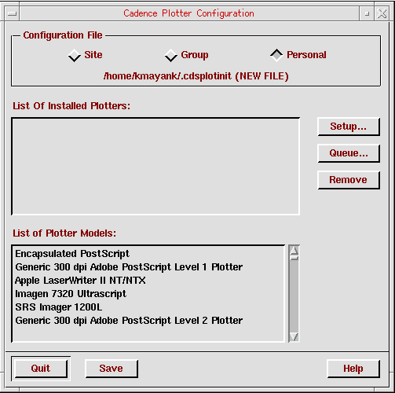
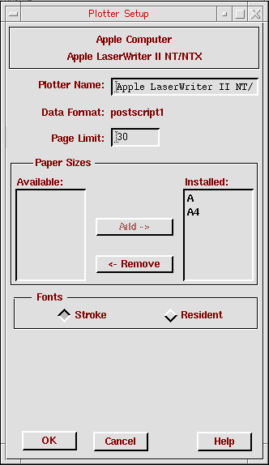
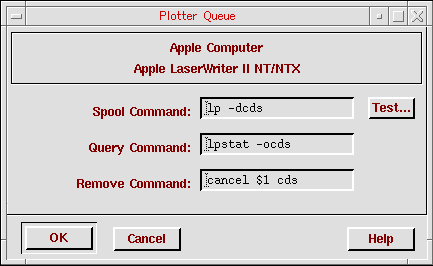

1
Overview
This manual is for system administrators who set up the Cadence® software and the plotters—those who perform the administrative tasks and provide the primary support of the Cadence software. Administrators do not need to read this entire guide, only those chapters pertaining to their specific plotters.
This manual accompanies the Cadence software and the Versatec Hardcopy (plotting) product.
Setting up a plotter requires three distinct tasks.
-
Attaching the hardware to the plot server
Physically connecting the plotter to the workstation with the appropriate boards, cables, and device drivers and printing the plotter’s self test.
Refer to your plotter hardware and the system hardware documentation. -
Configuring the workstation’s spooling system for the plotter
Defining the plotter for the workstation’s spooling system and setting up the print spooler. You set up a plotter the same way you set up a printer.
Appendix B, “Configuring Spooling Systems,” provides a general overview of configuring spooling systems. Refer to your operating system documentation for complete information. -
Setting up the Cadence software
This guide concentrates on how to configure the Cadence software for the plotter.
This overview discusses the following topics:
- Overview of Cadence Plotting Services
- Plotting Configurations on the Network
- Summary of the Plotting Installation
- Quick Start Guide to Setting Up a Plotter
Overview of Cadence Plotting Services
This section describes the general methods for setting up plotters. Each supported group of plotters has a separate chapter.
Setting up a plotter requires three distinct tasks:
- Installing the hardware
- Configuring the workstation’s spooling system for the plotter
- Setting up Cadence Plotting Services (CPS) software
The product notes for plotting list specific plotters that Cadence supports.
| Plotting Data Type | Comments |
|---|---|
|
Plots PostScript and encapsulated PostScript files. See Chapter 2, “Setting Up PostScript Plotters.” |
|
|
Used by electrostatic and pen plotters. Cadence software produces Format 907 Plotter Controller Interface (PCI) data. See Chapter 3, “Setting Up CalComp Plotters.” |
|
|
Plots HP-GL and HP-GL/2 files. See Chapter 4, “Setting Up Hewlett-Packard Plotters.” |
|
|
Used by Versatec, CalComp electrostatic plotters, and HP DesignJet and DeskJet printers. See Chapter 5, “Cadence Standard Raster Driver.” |
New Features
As of version 5.0.33, you can plot using a Windows plot server. See Chapter 6, “Setting Up a Windows Plot Server.”
Plotting Configurations on the Network
The plot server is the workstation to which the plotter is attached. The client workstation runs the design job using a Cadence application and a Cadence plotting product. A workstation with a plotter can be both a plot server and a client.
In the network configuration shown below, the plot server is also a client. Client 1 plots locally; clients 2 and 3 plot remotely. The dotted line represents the data sent to the plot server.
Depending on the plotter, the plot server and the client might need different plotting products (and Versatec licenses). When your company ordered the Cadence Plotting Services software, it specified if the Cadence software licenses will float on the network or be attached to specific workstations (node-locked).
Summary of the Plotting Installation
You set up plotting by following these general steps.
Quick Start Guide to Setting Up a Plotter
You set up a plotter the same way you set up a printer. Each operating system is somewhat different. Setting up a plotter requires several distinct tasks:
-
Attaching the plotter to the plot server
See your plotter documentation for information on how to connect the plotter to the plot server. -
Configuring the workstation’s spooling system for the plotter
See the your operating system documentation for complete information about its spooling system. You can configure the spooling system for your plotter after you -
Setting up the Cadence Plotting Services software
See the CalComp, HP, PostScript, Cadence standard raster driver, or Windows plot server chapter in this guide for more information about setting up the Cadence Plotting Services software for your plotter.
If you are familiar with setting up printers or plotters on your operating system or you are already plotting with your plotter, you might be able to follow the directions in this section. See the chapters on the specific plotters for more detail.
Setting Up the Plot Server
Use the parallel port for plotting if your plot server and your plotter have parallel ports.
-
Log in as
root. -
Create the queue and queue device.
OS How to Create the Queue and Queue Device
The chapters for specific plotters have more information. CalComp and Versatec plotters use a print filter that must be installed in the queue. See their chapters for more information. - Start the printer queue.
-
(Optional) Test the queuing command.
You can test the queueing command from the configuration utility. See “Setting Up the Cadence Software” for more details.
Setting Up the Clients
To plot remotely, you must set up the client workstations in one of two ways. The clients can NFS-mount the plot server and then plot, or you can set up the clients by following the steps below.
-
Log in as
root. -
Create the queue and queue device
OS How to Create the Queue and Queue Device - Start the printer queue.
-
For CalComp and Versatec plotters, set up the temporary directory.
See their chapters for more information. - If the Cadence Plotting Services software is not on the client, mount the software from the file server on which it is located.
-
(Optional) Test the queuing command.
You can test the queuing command from the configuration utility. See “Setting Up the Cadence Software” for more details.
Setting Up the Cadence Software
You must define the plotters in a Cadence plotter configuration file. If the X Window System or OpenWindows is running, you can save time by using the interactive plotconfig utility to define the plotters. If the X Window System or OpenWindows is not running, follow the procedures in the “Configuring the Plotter without the Utility” section of your plotter’s chapter.
-
Verify that your_install_dir
/tools/binand your_install_dir/tools/plot/binare in your search path.
If your workstation is set up correctly, typingcds_rootreturns your_install_dir. Ifcds_rootdoes not return the path, check your search path or see your system administrator.
your_install_dir is the directory in which the Cadence products are installed, such as/cds. -
Start the plotter configuration utility by doing one of the following:
-
At the UNIX prompt on a color terminal, type
plotconfig
-
At the UNIX prompt on a monochrome terminal, type
plotconfig -bw
 -
At the UNIX prompt on a color terminal, type
For information, click the Help button. For information about a specific topic (or field), move your cursor over the field and press F1 or the Help key. Press the key again (over the field) to close the help window, or click Close in the help window.
F1 or Help key does not display information about a field, check your window manager file, such as Motif’s ~/.mwmrc file. By default, the X Window System binds help to the F1 or Help key. Your file probably binds the F1 or Help key to something besides help.-
Select the plotter configuration file to modify.
You might want to consider several plotter configuration files:
The Cadence applications read the .cdsplotinit files in this sequence when the applications start:
The software appends the plotters to a list of available plotters and overwrites plotter definitions with the same plotter name. The last plotter defined is the definition the software uses.
-
In the List of Plotter Models list box, double-click the plotter model you want to put in the file.
The plotter model is added to the List of Installed Plotters list box. If you add several plotters of the same model, each plotter is numbered sequentially. For example,Apple LaserWriter II NT/NTX Apple LaserWriter II NT/NTX(1) Apple LaserWriter II NT/NTX(2)
- In the List of Installed Plotters list box, click the plotter model.
-
Click Setup.
A Plotter Setup form similar to the following appears.
For information, click the Help button. For information about a specific topic (or field), move your cursor over the field and pressF1or theHelpkey. Press the key again (over the field) to close the help window, or click Close in the help window. - Fill in the form.
- Click OK.
-
In the Cadence Plotter Configuration form, click Queue.
A Plotter Queue form similar to the following appears.

For information, click the Help button. For information about a specific topic (or field), move your cursor over the field and press F1 or the Help key. Press the key again (over the field) to close the help window, or click Close in the help window.
- Fill in the form.
- Click Test to test the queue command.
- Click OK.
- Repeat these steps to set up any other plotter configuration file.
-
In the Cadence Plotter Configuration form, click Quit.
If Quit is grayed out, close all windows from the plotconfig utility.
Testing the Configuration File
You test the .cdsplotinit file by plotting a design from a Cadence application.
- Start the Cadence application.
-
Print a design to test the
.cdsplotinitfile.
Follow the plotting procedure in your Cadence application’s user guide. If the plot does not come out, see Chapter 7, “Troubleshooting.”
Return to top